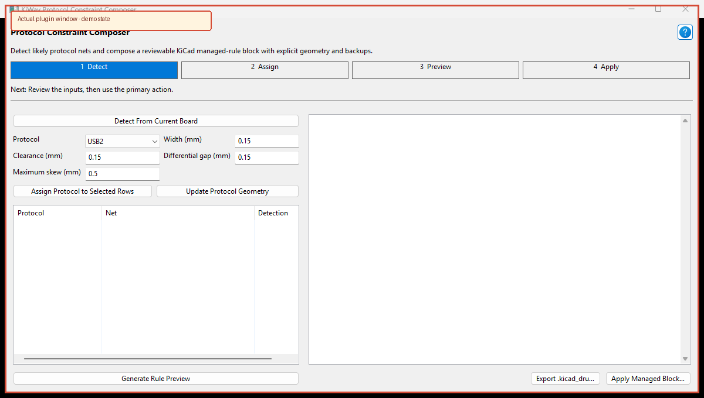

The plugin only replaces text between its managed markers. Existing rules outside that block remain untouched.
Preset dimensions are starting points, not authoritative protocol values. Derive final dimensions from the actual stackup, device requirements and fabricator field-solver results.